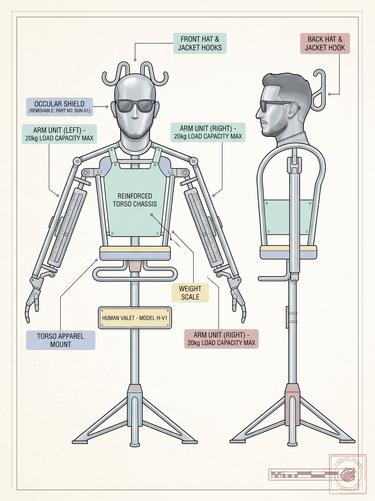
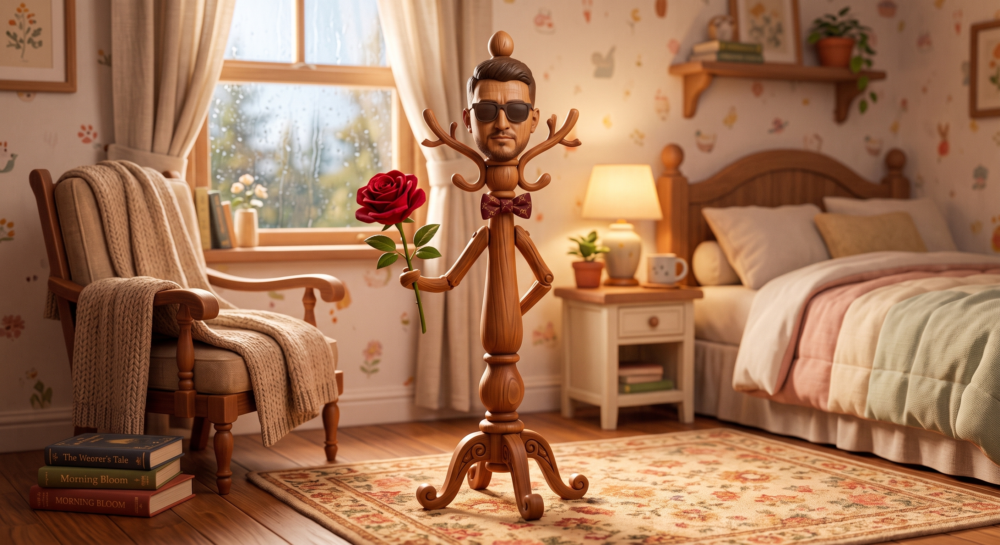
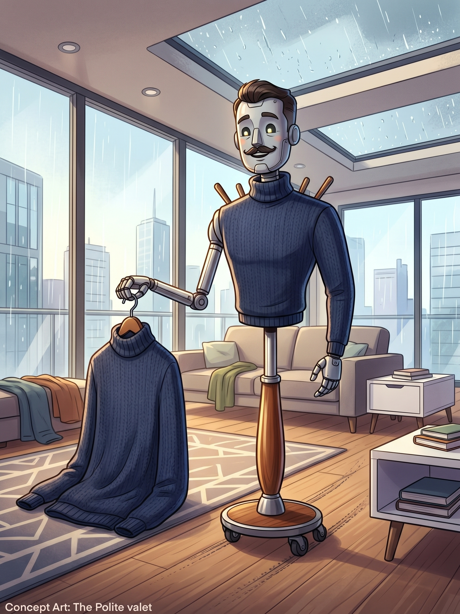

| Genel & Donanımsal Özellikler | |
|---|---|
| Kullanıcı Kilidi | Sadece dünyada 1 adet bulunan Auratik Kız'a biyo-rezonansla duyarlı. Başkası asla kullanamaz. |
| Kol Kapasitesi | 2 bağımsız robotik kol; her biri maksimum 20 kg yük taşıma torkuna sahip. |
| Maksimum Yük | İki kol kat kat kıyafet taşıyabilir; acil durumda auratik kızı tamamen kucaklayıp kaldırabilir. |
| Baş Ünitesi | Çift yönlü (önlü-arkalı) şapka ve ceket kancası entegre mekanik portre. |
| Otonom Takip | Oda içi serbest devriye; seyahat ve şehirlerarası yolculuklarda peşinden gelebilme donanımı. |


